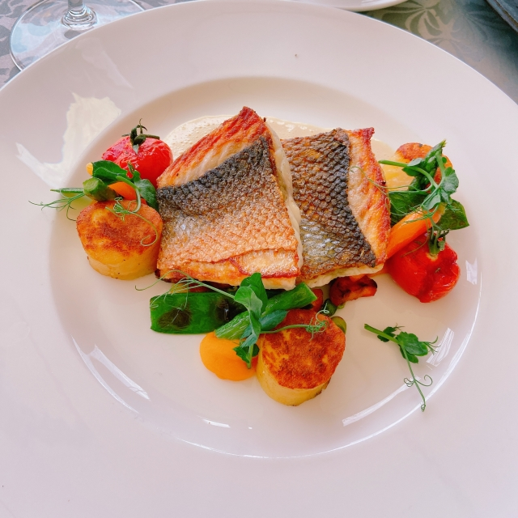
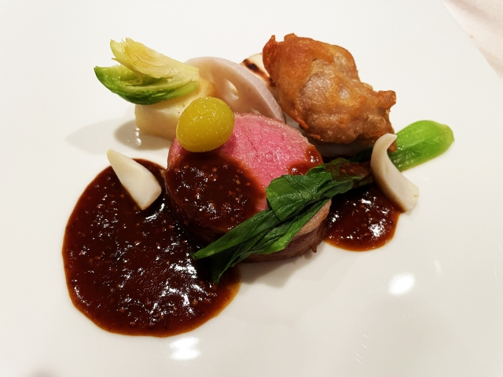
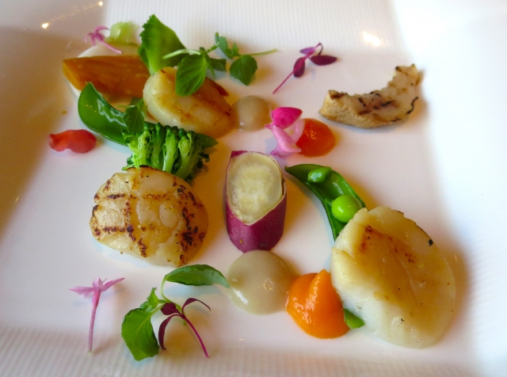
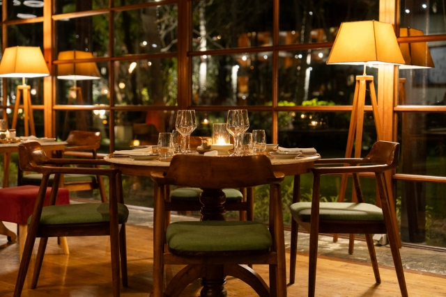
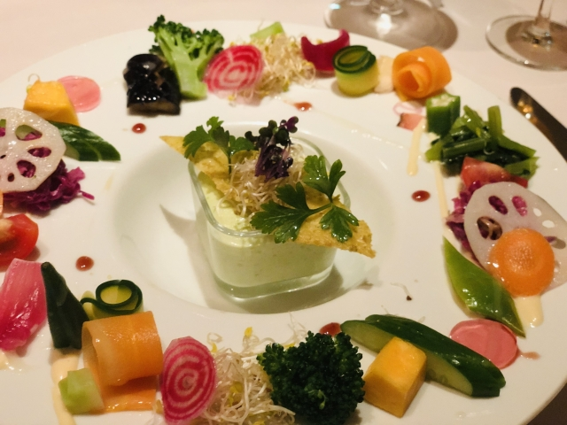

月の光がそっと包む、
落ち着いた空間
カップルや家族連れでも気軽に訪れられる、 月明かりのように温かい雰囲気のレストランです。
Photo





Company
| 会社名 | Moon Restaurant |
|---|---|
| 所在地 | 愛知県名古屋市中区栄0-0-0 |
| 電話 | 052-0000-0000 |
| 内容 | 飲食、通販 |
Access
愛知県名古屋市名東区1-168790
「山の手駅」から車で10分
[OPEN]10:00-22:00 [CLOSE]水曜日